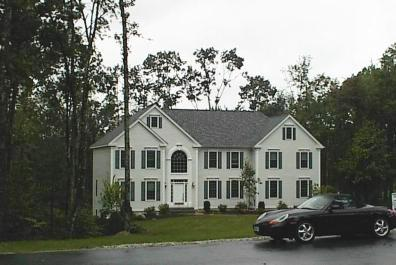
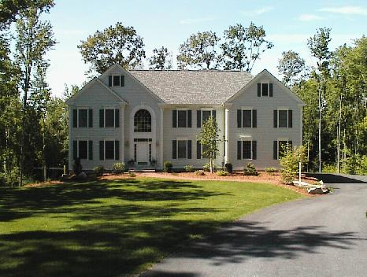
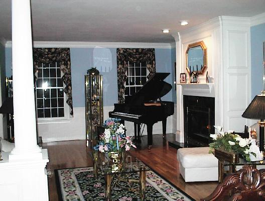
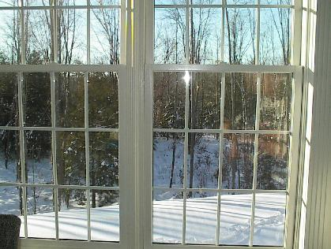

The above was taken in the late fall; at the time, we were looking into buying the house (i.e., it was not ours yet).

The above was taken June 1, 2001 (view from the street). We finally get to really enjoy the house now that the nice weather is here in NH. I believe this was taken in the morning when the sun shines to the left of the house.
The above shows the driveway from the view of the mailbox. It's a nice long driveway but requires some effort when the snow piles on it.
Above is a view from the rear. Note the nice big windowed area to the right. This gives us lots of light in the eat-in kitchen -- one of my favorite features.
The above two pictures show views of the dining room from the living room. Both rooms flow as a single room but are separated via the pillars on either side.

The above is a view of the living room from the dining area.

Here's the view from the eat-in area off of the kitchen. During winter, there is some nice scenery to take in while having breakfast.
Here are the specifications: Colonial style with 3 car garage, 4000 sq ft., 3.5 baths, 4 bedroom, rec room, downstairs office, alarm system, central vac, hardwood floors downstairs, carpet upstairs, all on 2.29 acres of land.